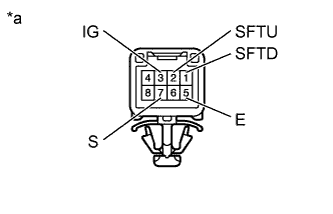
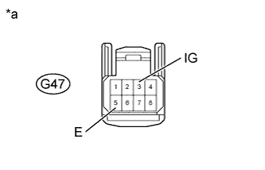
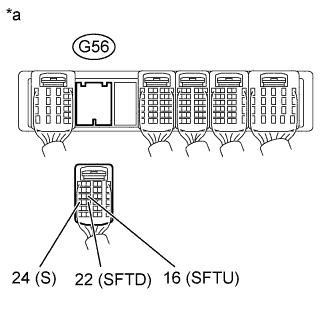

СИСТЕМА АВТОМАТИЧЕСКОЙ ТРАНСМИССИИ (для моделей с двигателем 1GR-FE) > Цепь датчика положения селектора передач |
| 1.ПРОВЕРЬТЕ ДАТЧИК ПОЛОЖЕНИЯ СЕЛЕКТОРА ПЕРЕДАЧ |
|  |
Отсоедините разъем G47 датчика положения селектора передач.
Измерьте сопротивление в соответствии со значениями, приведенными в таблице ниже.
| Контакты для подключения диагностического прибора | Условие | Заданные условия |
| 3 (IG) - 7 (S) | Рычаг переключения передач в положении "+" или "-" режима S | Менее 1 Ом |
| 2 (SFTU) - 5 (E) | Рычаг переключения передач удерживается в положении "+" (переключение на более высокую передачу) | Менее 1 Ом |
| 1 (SFTD) - 5 (E) | Рычаг переключения передач удерживается в положении "-" (переключение на более низкую передачу) | Менее 1 Ом |
| 3 (IG) - 7 (S) | Рычаг переключения передач не в положении "+" или "-" режима S | 10 кОм или более |
| 2 (SFTU) - 5 (E) | Рычаг переключения передач в положении S | 10 кОм или более |
| 1 (SFTD) - 5 (E) | Рычаг переключения передач в положении S | 10 кОм или более |
| *a | Устройство с неподсоединенным жгутом проводов (датчик положения селектора передач) |
|
| ||||
| OK | |
| 2.ПРОВЕРЬТЕ ЖГУТ ПРОВОДОВ И РАЗЪЕМ (ДАТЧИК ПОЛОЖЕНИЯ СЕЛЕКТОРА ПЕРЕДАЧ – АККУМУЛЯТОРНАЯ БАТАРЕЯ, МАССА) |
|  |
Отсоедините разъем G47 датчика положения селектора передач.
Измерьте напряжение в соответствии со значениями, приведенными в таблице.
| Контакты для подключения диагностического прибора | Положение переключателя | Заданные условия |
| G47-3 (IG) - масса | Зажигание включено (IG) | 11 - 14 В |
| G47-3 (IG) - масса | Зажигание выключено | Менее 1 В |
Выключите зажигание.
Измерьте сопротивление в соответствии со значениями, приведенными в таблице ниже.
| Контакты для подключения диагностического прибора | Условие | Заданные условия |
| G47-5 (E) - масса | Всегда | Менее 1 Ом |
| *a | Вид спереди разъема со стороны жгута проводов: (к датчику положения селектора передач) |
|
| ||||
| OK | |
| 3.ПРОВЕРЬТЕ ЖГУТ ПРОВОДОВ И РАЗЪЕМ (ДАТЧИК ПОЛОЖЕНИЯ СЕЛЕКТОРА ПЕРЕДАЧ – ECM) |
|  |
Отсоедините разъем G56 ЕСМ.
Измерьте напряжение в соответствии со значениями, приведенными в таблице.
| Контакты для подключения диагностического прибора | Условие | Заданные условия |
| G56-24 (S) - масса |
| 11 - 14 В |
| G56-24 (S) - масса |
| Менее 1 В |
Выключите зажигание.
Измерьте сопротивление в соответствии со значениями, приведенными в таблице ниже.
| Контакты для подключения диагностического прибора | Условие | Заданные условия |
| G56-16 (SFTU) - масса | Рычаг переключения передач удерживается в положении "+" (переключение на более высокую передачу) | Менее 1 Ом |
| G56-22 (SFTD) - масса | Рычаг переключения передач удерживается в положении "-" (переключение на более низкую передачу) | Менее 1 Ом |
| G56-16 (SFTU) - масса | Рычаг переключения передач в положении S | 10 кОм или более |
| G56-22 (SFTD) - масса | Рычаг переключения передач в положении S | 10 кОм или более |
| *a | Вид сзади разъема со стороны жгута проводов (к ECM) |
|
| ||||
| OK | ||
| ||